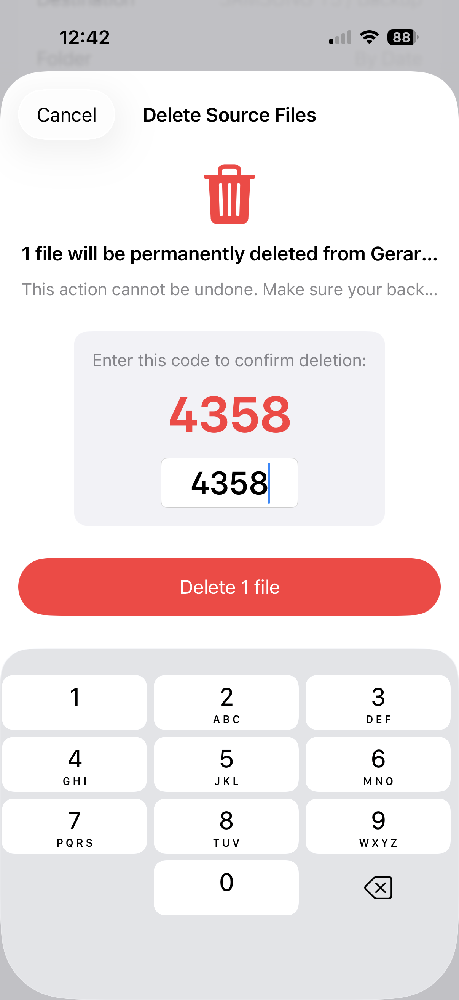
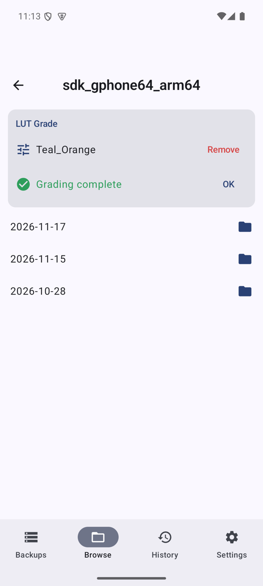

PhotoVideoBackup — ユーザーガイド
写真とビデオを、外付け SSD、SD カード、または NAS にバックアップ — iPhone でも Android スマートフォンでも。
PhotoVideoBackup 2.8 ガイド — iPhone（iOS 16 以降）と Android（9 以降）
1 PhotoVideoBackup とは？
PhotoVideoBackup は、スマートフォンの写真やビデオ、またはカメラのメモリーカードの内容を、ポータブル SSD、USB ドライブ、または NAS にコピーします。メディアがオンラインサービスを経由することはありません。アプリにはサーバもアカウントもありません。
- スマートフォンの容量がいっぱいで、安全に空きを作りたいとき。
- 旅行から帰り、映像（DJI、GoPro、Insta360、Blackmagic…）でいっぱいの SD カードを一度に確実に保存したいとき。
- iCloud や Google フォトに頼らない、自分だけのコピーが欲しいとき。
何が安全なのか？ コピーしたファイルはすべて読み戻され、数学的なフィンガープリント（SHA-256）で検証されます。1 バイトでも違えばアプリが知らせるため、気づかないうちに壊れたバックアップができることはありません。
アプリはコピーだけを行います。バックアップの後にあなたが明示的に求めない限り、ソースから何かを移動したり削除したりすることはありません（「履歴とレポート」を参照）。
2 無料版と Pro
PhotoVideoBackup は無料でダウンロードできます。Pro を 1 回購入（買い切り、サブスクリプションなし）すると、高度な機能が使えます:
| 機能 | 無料 | Pro |
|---|---|---|
| 写真ライブラリを 1 つのドライブまたはフォルダにバックアップ | ✓ | ✓ |
| 複数のバックアップ。それぞれ専用のドライブ、NAS、設定を持てます | — | ✓ |
| バックアップの参照とプレビュー（LUT プレビュー含む） | ✓ | ✓ |
| カメラカードや USB ドライブのバックアップ（SD、DJI、GoPro、Insta360…） | — | ✓ |
| 2 台目のドライブへのミラーリング | — | ✓ |
| Wi-Fi 経由で NAS にバックアップ | — | ✓ |
| WebDAVサーバー（Nextcloud、pCloudなど）へのバックアップ | — | ✓ |
| LOG ビデオを LUT でグレーディング（H.265 書き出し） | — | ✓ |


3 必要なもの
| iPhone / iPad | Android | |
|---|---|---|
| デバイス | USB-C ポート付きの iPhone（iPhone 15 以降）、iOS 16 以降 | Android スマートフォンまたはタブレット、Android 9 以降 |
| ドライブ | USB-C SSD ならどれでも（Samsung T7、SanDisk Extreme、WD My Passport…） | USB-C SSD または USB ドライブ、またはスマートフォン上のフォルダ |
| ハブまたはリーダー（任意） | SSD とカードリーダーを同時に接続できる小型の USB-C ハブ | USB-C カードリーダー、または OTG ハブ |
長時間のバックアップ、2 台のドライブ。スマートフォンの USB-C ポートは 1 つで、バスパワーの SSD はそこから電力を取ります。パワーデリバリー対応のパススルー付き USB-C ハブなら、2 台のドライブとモバイルバッテリー（または充電器）を同時に接続できます。バッテリーがハブに給電し、ハブが SSD に給電してスマートフォンを充電するので、バッテリーを消耗せずに何時間でもバックアップできます。

4 初回起動と権限
ウェルカム画面でアプリの紹介と、5 つの代表的な構成（シンプルなスマートフォン → SSD から、VPN 経由の NAS まで）を表示します。はじめるをタップしてください。

- iPhone / iPad: 写真ライブラリへのフルアクセスを許可してください。許可しないと、アプリは写真を読み取れません。
- Android: 写真とビデオへのアクセスを許可してください。写真の位置情報へのアクセスも許可してください。許可しないと、Android が渡すファイルから GPS データが削除され、バックアップが元のファイルと同一にならなくなります。バックアップの終了を知らせるため、通知も許可してください。
5 デバイス名と保存先を設定する
- 設定タブを開きます。デバイスセクションでフォルダ名を入力します（例: Anna の iPhone や Pixel 8）。これがドライブ上のフォルダ名になるため、同じドライブに保存する 2 台のスマートフォンが混ざりません。名前を設定するまでバックアップは始まりません。
- ドライブを接続します。
- iPhone / iPad / Android：バックアップタブを開き、新規バックアップ（または +）をタップしてフォトライブラリ / ギャラリーを選び、保存先を追加 → フォルダ…をタップして、ファイルブラウザでドライブまたはその中のフォルダを選びます。バックアップに名前を付け、作成をタップします。
- ドライブ名はバックアップのカードに、空き容量とともに表示されます。この操作は一度だけです。次回からアプリがドライブを認識します。


6 写真とビデオをバックアップする
バックアップタブを開きます。各バックアップは、名前、コピー元とコピー先、ドライブの空き容量を示すカードです。実行をタップします。Pro では、複数のバックアップを作成できます（たとえばドライブ用と NAS 用）。それぞれ専用の設定を持ち、カードを長押し（iPhone）するか、その ⋮ メニューをタップ（Android）して、設定を開きます。 ピクトグラムの小さなバッジは、データの経路を示します。ローカルドライブはケーブル、NAS やクラウドフォルダは、スマートフォンが接続しているネットワークに応じて Wi-Fi またはモバイルデータ（SIM / eSIM）です。保存先は、フォルダ（ドライブ、カード、または「ファイル」アプリ内の任意のフォルダ。iCloud DriveやGoogle Driveを含む）か、アドレスとアカウントで接続するサーバー（NAS、Nextcloud、pCloudなど）です。バックアップには、どちらも複数設定できます。
バックアップを開始する前に、バックアップを開始しますか？画面で、これから行う内容が表示されます。コピー元に続いて各コピー先が、種類を表すピクトグラム（ドライブ、NAS、クラウドフォルダ、またはスマートフォン自体 — オレンジ色で警告付き）とともに表示されます。バックアップに電源接続が必要な場合は、充電中かどうかも表示されます。確認してバックアップを開始をタップするか、×でキャンセルします。


アプリはライブラリをスキャンしてからコピーします。最初のバックアップが最も時間がかかります。次回からは新しいものだけをコピーするため、ずっと速くなります。
- iCloud / Google フォトにしかない写真は、先にダウンロードされます。そのため、通信環境と少し時間が必要です。
- アプリは各ファイルを保存先へ直接コピーするため、スマートフォンの空きがほとんどなくても動作します。
- アプリを離れても構いません。バックアップが終わると通知でお知らせします。
7 カメラカードをバックアップする（Pro）
- カードリーダーをスマートフォンに接続し、カードを挿入します（SSD も接続したままにしたい場合はハブを使います）。
- iPhone / iPad / Android：バックアップタブで + をタップしてカメラまたはSDカードを選び、ソースを追加…でファイルブラウザからカードを選びます。保存先を追加で保存先を追加します。ドライブにはフォルダ…、NASやほかのサーバーにはサーバーを使います。
- 保存先を選び、名前を付けます — Blackmagic、日本旅行 など。デバイスの種類は自動で認識されます。
- 実行をタップします。
| 認識されるデバイス | バックアップされるもの |
|---|---|
| DJI Mini 3 Pro | 写真、ビデオ、DNG、テレメトリ（.srt） |
| DJI 360 / Action（Neo 2…） | ビデオ、写真、DNG、音声、テレメトリ（.srt） |
| Insta360（X5…） | .insv、.insp、.lrv ファイル |
| GoPro HERO | ビデオと写真。プロキシ（.lrv）とサムネイル（.thm）ファイルはスキップされます |
| その他 | 一般的な写真、ビデオ、RAW 形式 |
ソースを削除するには、それを使っているバックアップを削除します（ほかのバックアップが使っていなければ、カードも忘れられます）。ファイルは削除されません。
8 バックアップ実行中
バックアップをタップした瞬間にバックアップ中パネルが表示されます。最初は準備中…（保存先への接続）、続いてソースを分析中…で、見つかったファイル数がリアルタイムで表示されます。大きなライブラリでは少し時間がかかりますが、止まっているわけではありません。

| フェーズ | アプリの動作 |
|---|---|
| スキャン | ファイルを数え、コピーが必要なものを確認します。 |
| コピー | ファイルを保存先に書き込みます。 |
| 検証 | コピーを読み戻して、元のファイルと比較します。 |
| スキップ | ファイルはすでにバックアップ済みです。何もする必要はありません。 |
停止ボタンで、いつでもバックアップを安全に終了できます。設定 → バックアップには1 回あたりの最大ファイル数の上限もあります。空欄にすると無制限です。
9 バックアップが終わったら

| 数 | 意味 |
|---|---|
| コピー済み | 保存先に初めて保存されたファイル。 |
| スキップ | すでにあったファイル。正常で安全です。 |
| 失敗 | コピーできなかったファイル（まれです）。 |
失敗の原因は、カードの損傷、ドライブの空き不足、接続の切断、または空き容量に対して大きすぎる 1 つのファイルです。そのファイルだけが報告され、残りは続行されます。空きを作るか再接続して、もう一度バックアップを実行してください。不足分が補われます。
10 履歴とレポート
履歴タブには、すべてのバックアップが一覧表示されます: ソース、保存先、フォルダ構成、ファイル数、そして色（成功は緑、一部はオレンジ、失敗は赤）。

一部とは、バックアップが早く止まったことを示し、レポートに次の 4 つの理由のいずれかが記されます: 停止をタップした、ファイル数の上限に達した、保存先が切断された、または iPhone の容量が不足した（ファイルは安全です — 空きを作ってください）。ドライブを再接続するか空きを作って、もう一度実行してください。止まったところから再開します。
セッションをタップするとレポートが開きます: 概要、SHA-256 の状態、コピー・スキップ・失敗したファイルの一覧（失敗にはその理由付き）。保存先が 2 つある場合、レポートはドライブごとに表示されます。

ソースファイルを削除…は、バックアップに満足したあとで、カードやライブラリの空きを作ります。コピーされ、かつ検証されたファイルだけが対象になり、確定には 4 桁のコードを入力する必要があります。バックアップには手を付けません。iPhone でも Android でも、写真についてはシステムがもう一度確認します。

11 バックアップを参照・表示・共有する
参照タブでは、ドライブの中身をアプリ内で見られます: デバイスごとに 1 つのフォルダ、次に日付フォルダ、そしてサムネイルのグリッド。写真をタップすると全画面で開き（スワイプでファイルを切り替え、ピンチで拡大）、ビデオをタップすると再生します。ドライブが接続されている必要があります。


ファイルを別の場所へ送るには、選択をタップしてファイルにチェックを付け、共有をタップします — AirDrop、メッセージ、メール、ほかのアプリ。

NAS では、参照でファイルの一覧が表示され、開くときに 1 つずつダウンロードされます。WebDAVサーバーでも同じように使えます。
12 フォルダとファイル名
設定 → バックアップのフォルダ構成で、デバイスフォルダの整理方法を決めます: フラット、月別、日付別（既定）、年 / 月別。参照タブは、ドライブ上にあるものに合わせて表示されます。
ファイル名の設定は、すべてのファイルに最初にコピーされる時点で最終的な名前を付けます。カメラの名前で保存してから名前を変更することはありません。バックアップ時にファイル名を変更をオンにして、パターンを編集します。トークンをタップすると挿入され、それ以外は文字としてそのまま扱われます。例の行に結果が表示されます。

| トークン | 置き換え内容 |
|---|---|
| {YYYY} {MM} {DD} | 撮影の年、月、日 |
| {hh} {mm} {ss} | 撮影の時、分、秒（現地時間） |
| {device} | デバイスフォルダ名（スペースなし） |
| {original} | 拡張子を除いた元のファイル名 |
- 何も上書きされません。名前が別のファイルで使われている場合、新しいファイルには
-1、-2… の接尾辞が付きます。同時に撮影した 2 枚が別の名前になるよう、パターンに秒を含めてください。 - 重複はその名前で識別されます。すでにバックアップ済みのファイルは、その後に編集していてもスキップされ、同じ名前の別のファイルは区別して保存されます。
- 既存のファイルは名前が変更されません。この設定は、これからコピーされるファイルに適用されます。オフ（既定）の場合、ファイルはカメラの名前のままです。
メディアと一緒にコピーする追加のファイル拡張子も指定できます — たとえば GPS ログの gpx など。
13 LUT グレーディング: LOG 映像に仕上がりを与える（Pro）
LOG で撮影した映像（DJI D-Log M、GoPro Protune…）は、LUT を適用するまで平坦でグレーに見えます。参照でデバイスフォルダに LUT を割り当てると、アプリを離れずにプレビューとグレーディングができます。
- デバイスフォルダを開き、LUT グレーディングでLUT を割り当て…をタップし、LUT (.cube) を読み込みを選びます。標準的な
.cubeファイルなら何でも使えます（DaVinci Resolve、Final Cut Pro、カメラメーカー提供のもの）。 - そのフォルダのビデオをタップすると、LUT がリアルタイムで適用された状態で再生されます。このプレビューは無料です。
- 恒久的なコピーを作るには（Pro）、選択をタップしてビデオを選び、グレーディングをタップします。それぞれ LUT を焼き込んだ H.265 で再エンコードされ、デバイス (Graded) という名前の隣のフォルダに保存されます。


- グレーディングはビデオごとに行い、「すべて」は選べません。1 つのフォルダには LOG と通常のクリップが混在することが多く、LOG 用 LUT を通常のクリップに当てると台無しになるためです。
- グレーディング済みのファイルはスキップされるため、もう一度実行しても安全です。いつでもキャンセルでき、完了したファイルは残ります。
- グレーディングは負荷が高い処理です。アプリを開いたまま、ドライブを接続したままにしてください。スマートフォンが熱くなることがあります。
- NAS では、クリップがダウンロードされ、スマートフォンでグレーディングされ、NAS 上のデバイス (Graded) フォルダにアップロードされます。時間がかかり、データも使用します。
14 2 つの保存先に同時にコピー（Pro）
2 つ目の保存先を追加します — バックアップのカードを長押し（iPhone）するか、その ⋮ メニューをタップ（Android）して、設定、保存先を追加の順に進みます。すべてのファイルが両方に同時にコピーされます — 2 台のドライブ、またはドライブと NAS。バックアップの時間が 2 倍になることはありません。一方の保存先が失敗または消えても、もう一方は続行し、レポートにどちらに何が足りないかが表示されます。
15 Wi-Fi 経由で NAS にバックアップ（Pro）
ドライブの代わりに、またはドライブに加えて、ネットワーク越しに NAS（Synology、QNAP、TrueNAS など、SMB に対応する機器ならどれでも）へ直接バックアップできます。ケーブルもクラウドも不要で、各ファイルは SHA-256 で検証されます。
- NAS で SMB ファイル共有を有効にし、共有フォルダへの読み書き権限をユーザに付与します。
- アプリで — iPhone / iPad / Android：バックアップを作成し、保存先を追加 → サーバー → NAS（Synology、QNAPなど）を選ぶか、既存のバックアップの設定からNASを追加します。
- ホスト（例:
192.168.1.20）、共有（例:photo）、任意のフォルダ、ユーザ名とパスワードを入力します。パスワードは iOS のキーチェーンまたは Android のキーストアに保存されます。 - 接続をテストをタップします: 「接続しました — N 個の項目が見つかりました。」 続いて作成（バックアップの設定では保存）をタップします。
NAS がバックアップのカードに、空き容量とともに表示されます。バックアップごとに専用の NAS を持つため、複数の NAS を使えます。NAS に到達できれば外出先からもバックアップできます。最も簡単で安全な方法は Tailscale のような VPN です。NAS とスマートフォンにインストールし、NAS の 100.x.x.x アドレスをホストとして使います。
16 Nextcloud、pCloud、その他のWebDAVサーバーへのバックアップ（Pro）
ドライブやNASのほかに、バックアップはWebDAVサーバー（Nextcloud、ownCloud、pCloud、WebDAVを有効にしたSynologyやQNAP、Hetzner Storage Boxなど）にも送れます。アドレスは安全なhttpsなので、VPNなしでどこからでも使えます。各ファイルはNASと同じようにSHA-256で検証されます。
- サーバーのWebDAVアドレスを確認します。Nextcloud：
https://あなたのサーバー/remote.php/dav/files/あなたの名前/。pCloud：https://ewebdav.pcloud.com/（ヨーロッパのアカウント）またはhttps://webdav.pcloud.com/（米国）。 - 2要素認証を使っている場合は、サーバーのセキュリティ設定でアプリパスワードを作成し、パスワードの代わりに使います。
- アプリで：バックアップを作成し、保存先を追加 → サーバー → Nextcloud、pCloud、WebDAVサーバーを選ぶか、既存のバックアップの設定から追加します。
- サーバーのアドレス、任意のフォルダ（例：
Backups）、ユーザー名、パスワードを入力します。パスワードはiOSのキーチェーンまたはAndroid Keystoreに保存されます。 - 接続をテストをタップし、続けて作成（バックアップの設定では保存）をタップします。
自己署名証明書を使う自分のサーバー。iOSがサーバーの証明書を信頼しない場合、テストでその旨が表示され、証明書のフィンガープリントが示されます。サーバーに表示されるものと一致することを確認してからこの証明書を信頼をタップします。以後はその証明書だけが受け入れられます（別の証明書は拒否されます）。この証明書を削除で取り消せます。
大きなファイル。NextcloudとownCloudでは、100 MBを超える動画は分割して送信され、中断したアップロードは止まったところから再開されます。そのほかのサーバーには各ファイルが1回のリクエストで送られます。サーバーやその前段のプロキシがアップロードのサイズを制限している場合、そのファイルは失敗として報告され、「サーバーがこのファイルサイズを拒否しました。アップロード上限を確認してください。」と表示されます。サーバーの上限を上げてから、もう一度実行してください。pCloud自身も、WebDAVは非常に大きなバックアップには向かないとしています。大きな動画にはドライブかNASをおすすめします。
17 Android と iPhone: 違い
2 つのアプリは同じエンジンを共有しています。重複の検出、ファイル名、SHA-256 検証、インデックスはすべて同じで、一方で始めたバックアップはもう一方でも認識されます。
| iPhone / iPad | Android | |
|---|---|---|
| ライブラリのソース | 写真ライブラリ | ギャラリー（写真とビデオ） |
| 保存先 | 「ファイル」で選んだフォルダ（SSD、iCloud Drive、SMB） | システムのピッカーで選んだフォルダ（SSD、USB、スマートフォン本体のストレージ）、NAS |
| バックグラウンド | 約 30 秒。その後はバックアップ中、画面が点灯したままになります | フォアグラウンド通知で動作を維持し、停止ボタン付き |
| Pro | アプリ内課金（App Store） | 買い切り（Google Play） |
| Mac | Apple シリコンの Mac で動作（「iPad 用に設計」） | — |
.nomedia ファイル）。

18 よくある質問
もう一度実行すると、同じファイルが 2 回コピーされますか？ いいえ。各ファイルは保存先で名前が付けられ、次のバックアップはその名前で探します。アプリの記録で同じ元ファイルから来たと分かれば、その後に編集していてもスキップされます。名前が同じで本当に別のファイルだけが -1、-2… の接尾辞を付けて保存され、何も上書きされません。
アプリはバックアップ済みの内容をどこに記憶していますか？ アプリ自身のデータベースと、各保存先のルートにある小さな非表示ファイル .pvb-index.json です。このコピーはバックアップと一緒に移動するため、再インストール後や別のスマートフォンからでも、アプリはそれを読み込み、再コピーしません。そのままにしておいて構いません。削除してもアプリが再構築します。
NAS とドライブに同時にバックアップできますか？ はい。接続されているすべての保存先に、同時にバックアップされます。
NAS への接続がタイムアウトします。 多くの場合、NAS に到達できていません。同じ Wi-Fi に接続しているか（または VPN がオンか）、SMB 共有が有効か、NAS のファイアウォールが接続を許可しているかを確認してください。
1 台のドライブを 2 台のスマートフォンで使えますか？ はい。設定でそれぞれ別のフォルダ名を付けてください。各スマートフォンがドライブ上に専用のフォルダを作ります。
バーが 3% のまま止まっているようです。 最初のファイルは大きなビデオであることが多いです。数分お待ちください。
カードが「Documents」と表示されます。 一部のカメラは汎用のフォルダを使います。ソースを追加するときに、分かりやすい名前を入力してください。
スマートフォンの空きがほとんどなくてもバックアップできますか？ はい。ファイルは保存先へ直接ストリーミングされ、一度に数メガバイトしか保持されません。NAS のみへのバックアップだけは、一度に 1 ファイル分の空きが必要です。本当に収まらないファイルは失敗として報告され、残りは続行されます。
データはどこかに送信されますか？ いいえ。すべてがスマートフォンとドライブまたは NAS の間で完結します。アプリにはサーバもアカウントもありません。ネットワーク通信は、自分で設定した NAS への通信と、システムによる自分の iCloud / Google フォトのダウンロードだけです。ご自身で設定したWebDAVサーバーについても同様です。
対応言語は？ 英語、フランス語、ドイツ語、スペイン語（中立、スペインと中南米向け）、イタリア語、ポルトガル語（欧州）、簡体字中国語、繁体字中国語、ロシア語、日本語、韓国語、ヒンディー語、アラビア語です。アプリはスマートフォンの言語に従います。設定 → 言語で、再起動なしに強制変更できます。
pCloudにバックアップできますか？はい、WebDAV経由で可能です。https://ewebdav.pcloud.com/（米国のアカウントはhttps://webdav.pcloud.com/）、pCloudのメールアドレスとパスワード、Backupsのようなフォルダを使います。重複はほかの保存先と同じように検出されます。ファイルは1回でまとめて送られるため、大きな動画にはドライブかNASのほうが確実です。
「サーバーがこのファイルサイズを拒否しました」と表示されます。サーバー、またはその前段のプロキシ（nginx、Cloudflareなど）がアップロードのサイズを制限しています。上限を上げるか（Nextcloudではupload_max_filesize、post_max_size、プロキシのリクエストサイズ）、大きな動画はドライブかNASにバックアップしてください。NextcloudとownCloudは、上限を回避できる分割アップロードにも対応しています。